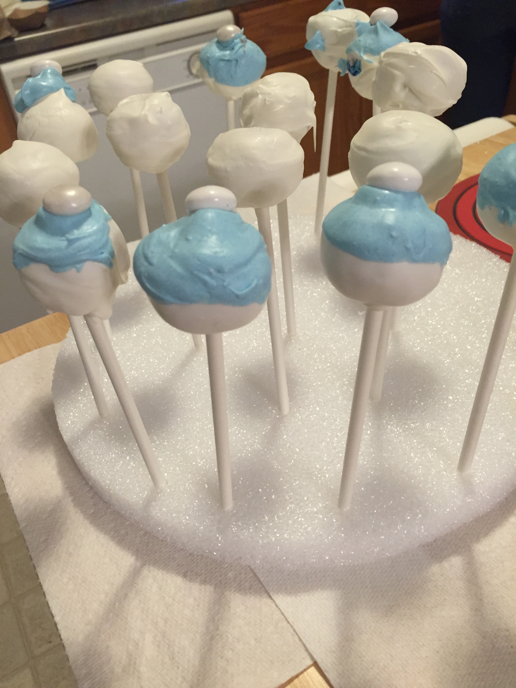
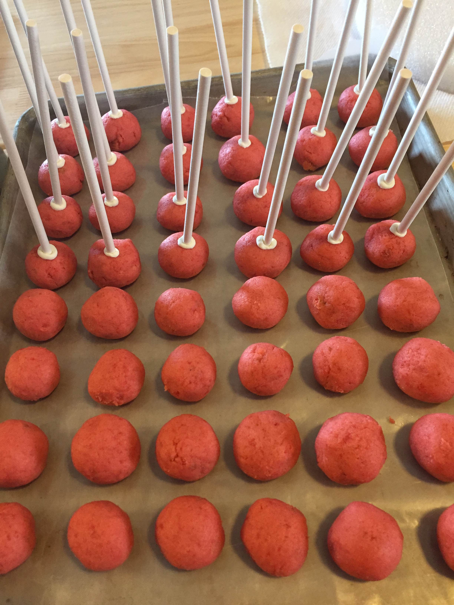
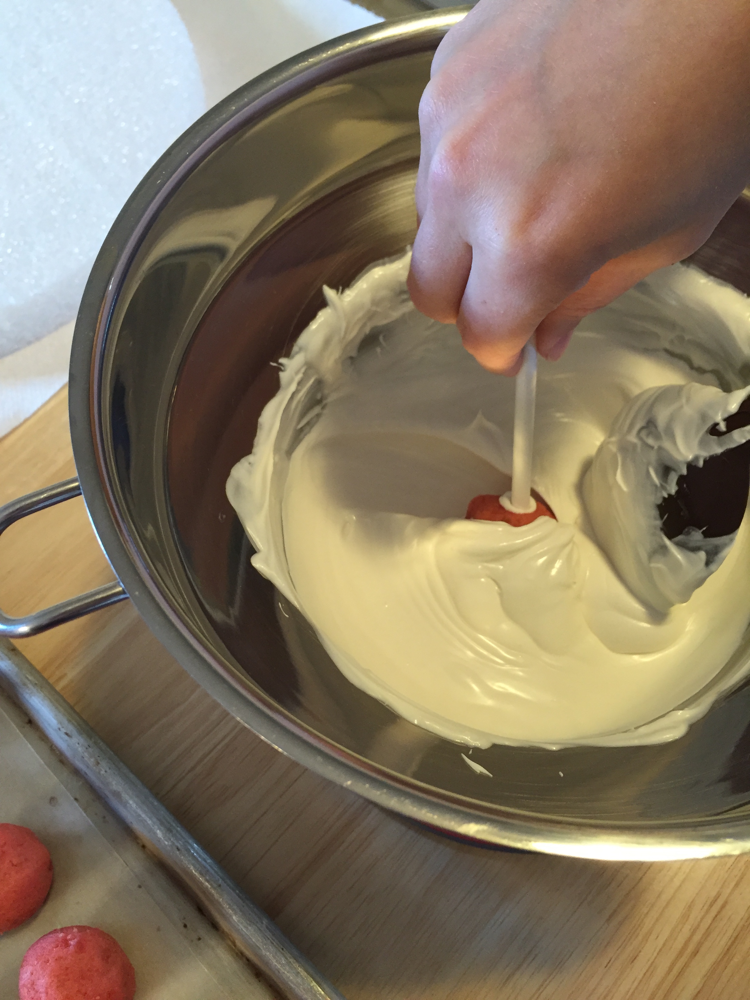
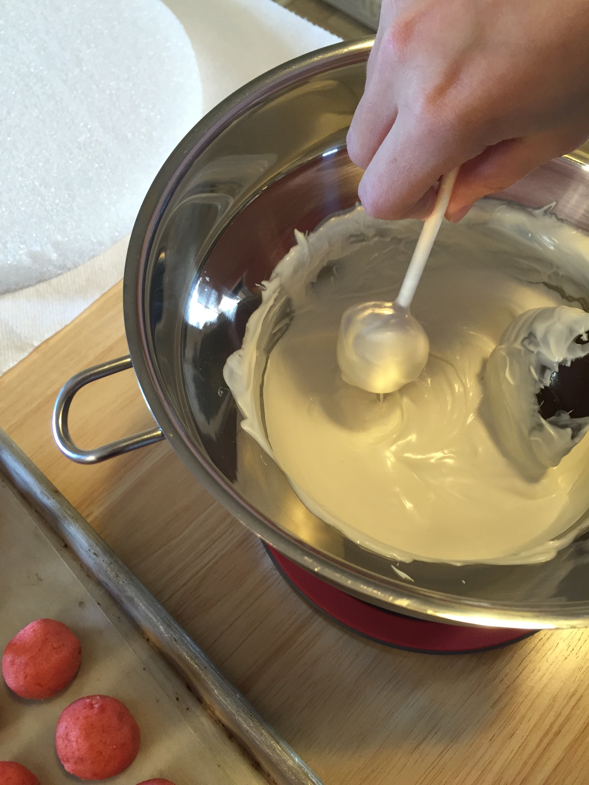
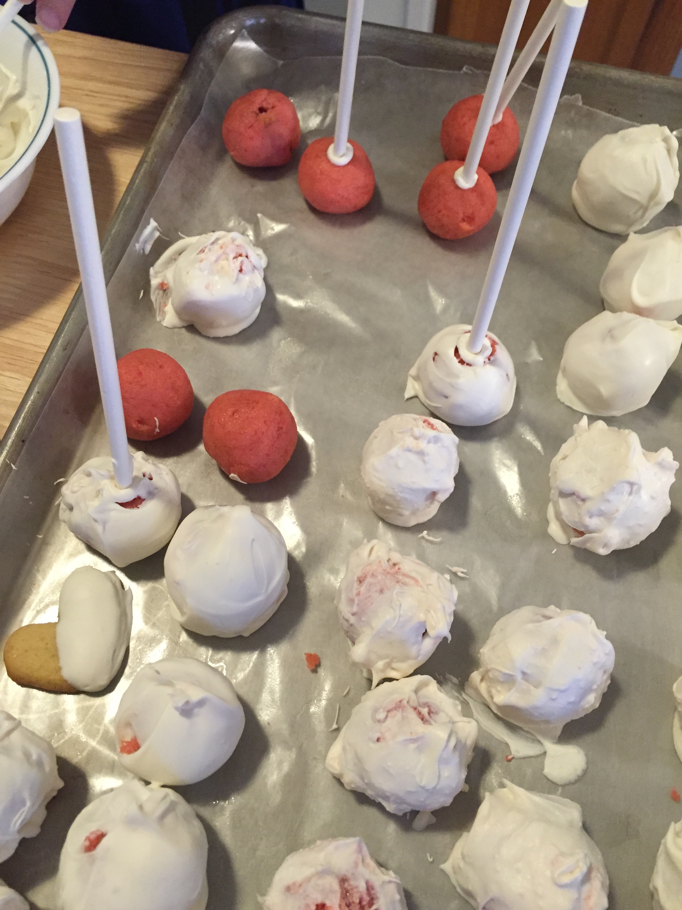
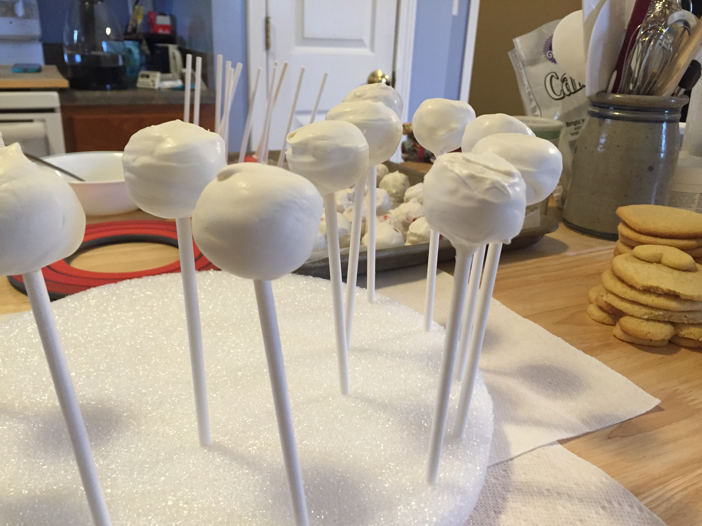
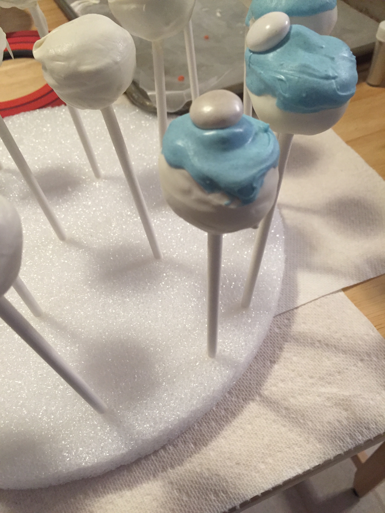
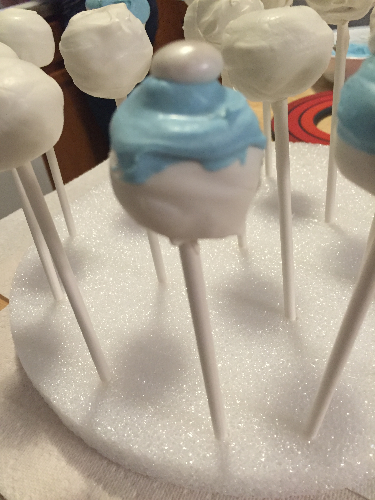

Don't Be Like Me
By: Lisha
11/22/2016
.A few days ago Amanda and I tried to make cake pops. The key word here is “try” because what started out as a pretty successful endeavor quickly turned into an unsalvageable mess. I would like to start off by apologizing to anyone who is easily offended by unsightly images; you may want to look away. Anyway, I digress. Let’s go back to the part where it started out really well.
In case you have been severely disconnected from society for the past few years, cake pops are crumbled cake that has been mixed with frosting, rolled into a ball, dipped in chocolate or frosting, and placed on a stick to resemble a lollipop. Decorators get incredibly creative when it comes to decorating cake pops; the options are infinite! I recommend checking out a blog called Bakerella; she makes absolutely beautiful designs. We chose to loosely emulate this snowman cake pop design that she created (yes that’s what we were going for).
The recipe for cake pops is pretty simple. First, you bake a boxed cake mix according to the directions on the package. Sometimes I add an extra egg or swap the recommended oil amount out for melted butter to add flavor and moistness. Once the cake has cooled you crumble it up in a large bowl and mix in a little less than a whole container of store-bought frosting (we used strawberry cake mix and vanilla frosting). I say a little less because if you add the entire thing the cake pops will be too mushy and will taste more like a puree than a tasty dessert. It works best if you start out with about half of the container and gradually add more until you have the desired consistency. It may sound a little scary but I didn’t have any problems at all with this step.
Next, you roll the mixture into roughly quarter-sized balls. Then, you take lollipop sticks and dip them into a little bit of melted chocolate (we used white chocolate for the snowmen) and stick them a little less than halfway into the cake balls. Once that is done the pops need to be transferred to a freezer to set for about 30-45 minutes. Look how beautiful they were. If only they knew…
.After the pops are set you want to dip them in some sort of chocolate. Here is where things started to go downhill for us. But before we get to that, let’s just pretend for a moment that we live in a perfect world where cake pops always turn into perfect snowmen and everything is pure and fair. In this world, you would gently twirl the cake pop into the melted chocolate, lightly tap off the excess, and place them in a block of Styrofoam to dry and turn into perfectly smooth canvases. Once they were set you would adorn them with sunflower seed noses, drawn on faces, and gummy candy hats. They would perpetually smile at the universe with tic-tac earmuffs and permanent rosy cheeks and everyone would be at peace.
Okay, back to reality. I genuinely believe our downfall was the type of chocolate that we used. Our complete ineptness when it comes to decorating probably didn’t help but the chocolate was what really killed our hopes and dreams for perfect snowmen. We used the Wilton brand chocolate melts. You can find them at most superstores or decorating supply stores. They sit on the shelf in fancy bags with the official, seemingly credible “Wilton” logo plastered on the front. Please listen to me: do not let the logo fool you. This chocolate is tasty but it is no good for cake pops. As soon as we started to dip the pops we realized this. It cools way too quickly and was just generally a lot thicker than we wanted it to be. We would dip two or three pops and the chocolate would become almost impossible. This resulted in cake pops that were clumpy and cracked, nothing like the beautiful pictures you see online. We managed to get a few good ones but all around it wasn’t worth the hassle.
. . . .After the chocolate debacle, our decorating endeavor quickly turned into a sequence of tragic events. We had planned on dipping the pops into chocolate that had been colored blue to resemble hats, however the thick chocolate made it impossible to get a smooth, hat-like surface. Next we tried to add pom-poms to the “hats” using chocolate candies. On some of the pops this worked out but ultimately they were a little too large and heavy. We attempted to draw faces on the snowman using edible pens but we quickly realized that the quality of these pens were the equivalent to a marker that is running out of ink and only writes in streaked, fading lines. It could have been the chocolate that made them not work well but either way I don’t necessarily recommend them.
So, that’s my explanation for these poor, poor creations. Even though they didn’t reach their full potential, they are still really delicious. You should make them! Just don’t be like me. PLEASE.
..Tl;dr: You really shouldn’t use the Wilton candy melts for cake pops no matter how fancy and official they look sitting on the shelf of your local craft store. Instead, use a nicer quality chocolate bar or chips. Also please learn to decorate before attempting difficult designs.